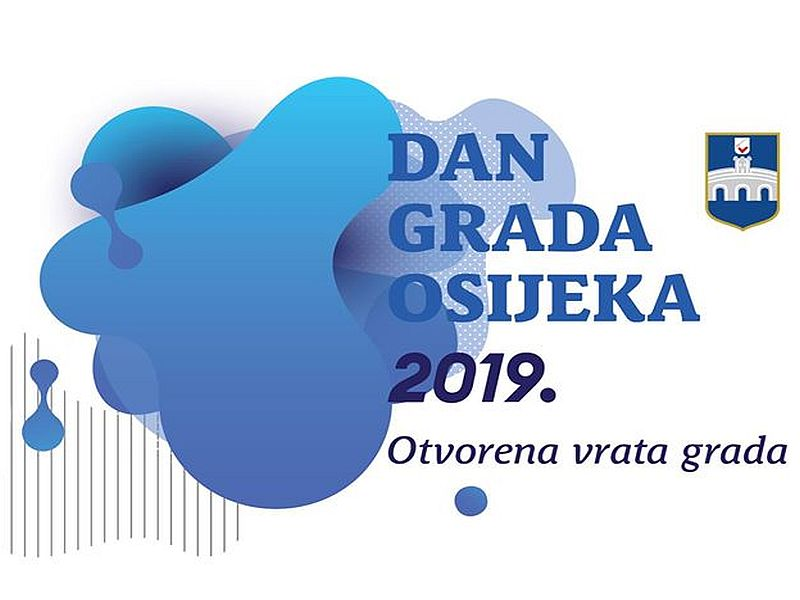
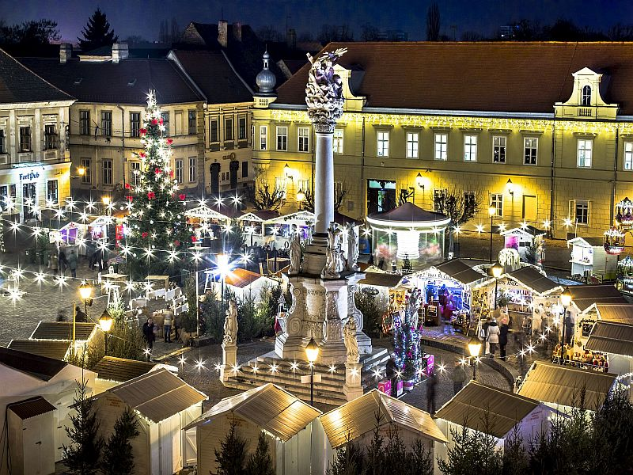

DAN GRADA OSIJEKA 2. PROSINCA 2019.

Dana 2. prosinca 1786. tri dijela Osijeka, nekadašnje
gradske općine - Tvrđa, Gornji i Donji grad - postali
su jedna cjelina. Tog datuma slavimo Dan grada, a
ovogodišnja "rođendanska proslava", vodi se krilaticom
Otvorena vrata grada. Pozivamo vas na višednevnu
proslavu koja će se od 29.11. do 5.12. događati na raznim
mjestima, a čija vrata su svima širom otvorena.
ADVENT U OSIJEKU

Svake godine tijekom prosinca posjetite Osijek i sudjelujte
u brojnim blagdanskim događanjima. Adventska događanja u
graduzapočinju prvog adventskog vikenda, a kao i svake godine
intenziviraju se nakon 2. prosinca, Dana grada.Advent u Osijeku
2019. trajat će od subote 30.11. do Badnjaka 24.12. Svečano
otvorenje održat će se u subotu 30. studenog u 18 sati, tada će
s radom započeti obje sajamske lokacije: Tvrđa i Gornji grad.